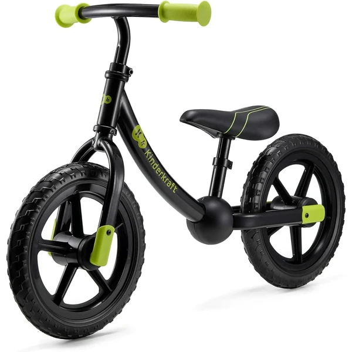
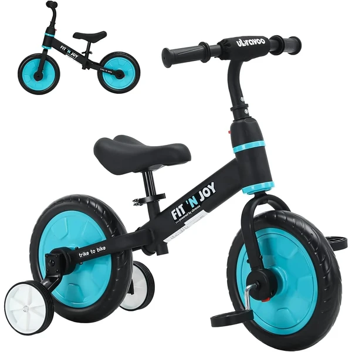
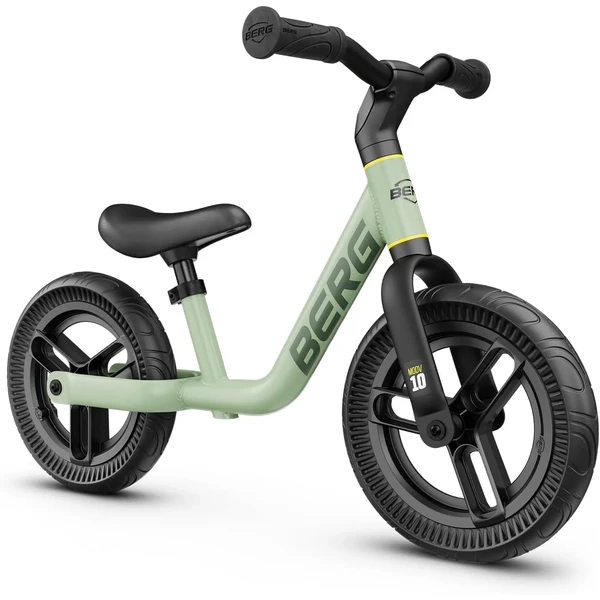

Chicco First Bike
Una bicicleta sin pedales ultraligera con sillín y manillar ajustables, diseñada para que el niño aprenda a mantener el equilibrio de forma natural, facilitando después la transición a una bicicleta con pedales.
⭐ ¿Por qué nos gusta?
- ✔ Estructura ultraligera, fácil de manejar.
- ✔ Sillín y manillar ajustables, crece con el niño.
- ✔ Ruedas anti pinchazos, sin mantenimiento.
💬 Lo que más destacan las familias
Lo que más suele gustar es lo fácil que resulta para el peque mantener el equilibrio casi desde el primer paseo, gracias a lo ligera que es la bici. Las familias también comentan que aguanta bien el uso diario y que sirve durante mucho tiempo antes de pasar a la bicicleta con pedales.
Ver en Amazon

Sawyer Bikes ultraligera
Una bicicleta sin pedales extremadamente ligera (2,9 kg) con ruedas anti pinchazos de alta densidad EVA, diseñada para ser controlable incluso por los niños más pequeños desde los 85 cm de altura.
⭐ ¿Por qué nos gusta?
- ✔ Peso ultra reducido, sensación de control inmediata.
- ✔ Ruedas sin aire, garantía de por vida.
- ✔ Disponible en 8 colores distintos.
💬 Lo que más destacan las familias
Muchos padres coinciden en que la ligereza se nota nada más subirse: los niños ganan confianza rápido porque pueden controlarla sin esfuerzo. También se comenta que las ruedas sin aire quitan una preocupación menos, ya que no hay pinchazos que vigilar.
Ver en Amazon

JOYSTAR bicicleta infantil multisize
Una bicicleta con pedales disponible en 5 tamaños (12 a 20 pulgadas) que crece con el niño. Incluye ruedines extraíbles, frenos duales (delantero y contrapedal), protector de cadena cerrado y neumáticos anchos para máxima estabilidad.
⭐ ¿Por qué nos gusta?
- ✔ 5 tamaños diferentes, acompaña desde los 2 hasta los 13 años.
- ✔ Ruedines extraíbles, frenos duales para mayor seguridad.
- ✔ 85% montada, solo necesita montaje final.
💬 Lo que más destacan las familias
Una de las cosas más comentadas es lo bien que acompaña el crecimiento del niño gracias a los distintos tamaños, sin tener que comprar una bici nueva enseguida. Los ruedines dan seguridad a los que todavía se están soltando con los pedales.
Ver en Amazon

Kinderkraft 2WAY Off Road Next
Una bicicleta sin pedales todoterreno con ruedas de EVA, sillín y manillar completamente ajustables, cuadro bajo de acero ultraligero (2,88 kg) y limitación de giro del manillar para máxima seguridad. Certificada por TÜV Rheinland.
⭐ ¿Por qué nos gusta?
- ✔ Ruedas todoterreno EVA, apta para cualquier superficie.
- ✔ Ultraligera (2,88 kg) y cuadro bajo para autonomía.
- ✔ Certificación TÜV Rheinland, limitación de giro.
💬 Lo que más destacan las familias
Los compradores valoran especialmente que ruede bien tanto en asfalto como en tierra o hierba, algo que anima a los niños más activos a salir a explorar. También se agradece que sea tan ligera de cargar cuando el paseo se hace largo.
Ver en Amazon

UBRAVOO Fit 'n Joy 4 en 1
Una bicicleta versátil 4 en 1 que se convierte en bicicleta de equilibrio, bicicleta con ruedas de entrenamiento, triciclo o bicicleta con pedales, con botón pulsador rojo para cambiar de modo sin herramientas. Neumáticos EVA sin pinchazos.
⭐ ¿Por qué nos gusta?
- ✔ 4 configuraciones, desde equilibrio hasta pedales completos.
- ✔ Cambio sin herramientas con botón pulsador rojo.
- ✔ Ultraligera (3 kg), neumáticos EVA sin pinchazos.
💬 Lo que más destacan las familias
Entre los comentarios más habituales aparece lo práctico que resulta poder cambiar de modo sin desmontar nada, así el niño va progresando a su ritmo sin frustrarse. Que sea tan ligera también ayuda a que se atrevan a pedalear antes.
Ver en Amazon

BERG MOOV 10
Una bicicleta sin pedales de 10 pulgadas con manillar y sillín regulables en altura, ruedas hinchables antideslizantes y construcción ligera y manejable, diseñada para niños de 2 a 5 años.
⭐ ¿Por qué nos gusta?
- ✔ Manillar y sillín regulables, crece con el niño.
- ✔ Ruedas hinchables antideslizantes, comodidad total.
- ✔ Marca BERG: calidad holandesa garantizada.
💬 Lo que más destacan las familias
Quienes lo han probado destacan el tacto sólido y cuidado del acabado, algo que se nota especialmente en el manillar y el sillín. Los niños suelen cogerle el punto al equilibrio enseguida gracias a lo manejable que resulta.
Ver en Amazon